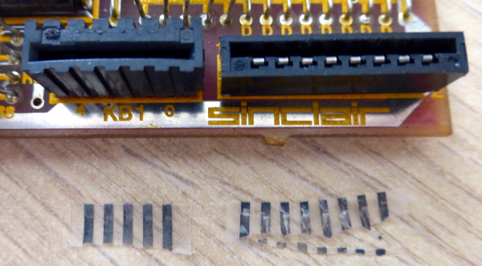
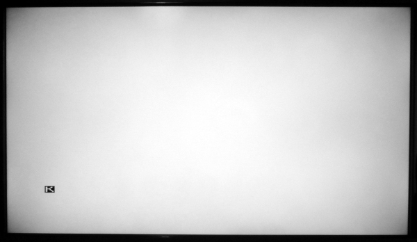
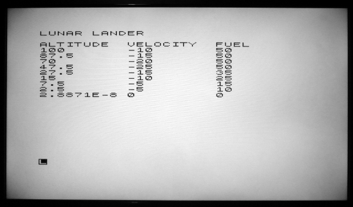

risorse | recupero di uno zx81
Mettendo ordine tra gli scatoloni che raccolgono le mie vecchie cose ho ritrovato uno ZX81. Il mio primo home computer è stato uno ZX Spectrum (ne parlo qui), questo mi è stato donato parecchi anni fa da un amico; conservo pure il manuale originale in lingua inglese.
Poiché a breve CoderDojoFVG — di cui faccio parte — in collaborazione con l'associazione FamigliAttiva di Palmanova terrà un CoderDojo particolare, incentrato sull'hardware dei calcolatori (cfr. pagina dedicata), ho pensato che potrebbe essere interessante mostrare ai partecipanti come si presentava l'informatica domestica nei primi anni 80.
Lo ZX81 appena uscito dallo scatolone.
Lo ZX81 è stato distribuito a partire dal 1981, e rappresenta il primo caso di successo di home computer a basso prezzo: in tre anni ne sono stati venduti più di un milione e mezzo. Monta una CPU Z80, una memoria ROM di 8KB che contiene il sistema operativo ed un interprete BASIC e una memoria RAM di 1KB per i programmi utente. Veniva venduto in kit di montaggio oppure già pronto all'uso. Il prezzo del kit si aggirava attorno alle 79.000 Lire, mentre la versione già assemblata poteva essere acquistata per la modica cifra di 120.000 Lire, che corrispondono a circa 250€ attuali.
L'ultima volta l'ho acceso più di dieci anni fa. Ricordo che funzionava, sebbene alcuni tasti non rispondessero. Per tale ragione acquistai una tastiera di ricambio sul sito RWAP Software (conservo ancora la fattura che riporta la data di gennaio 2009), senza mai trovare l'occasione per sostituirla.
La tastiera sostitutiva acquistata 10 anni fa.
Conscio del problema della tastiera, collego lo ZX81 al televisore attraverso il cavo d'antenna per verificare se funziona ancora e se il segnale TV prodotto dal computer, notoriamente critico (cercare in rete “zx81 back porch” per rendersene conto), viene riconosciuto come tale:
Mancato aggancio del segnale modulato.
Per quanto l'immagine risulti instabile, riconosco lo sfondo bianco e il cursore (una K in campo inverso) tipici della schermata iniziale dello ZX81. Premo uno per uno i tasti della tastiera: alcuni rispondono, altri no. Concludo che il computer funziona, per cui decido di ordinare un circuito di by-pass del modulatore (cfr. ZX8-CCB - video output for ZX81) che mi consentirà di collegare il computer all'ingresso video-composito del televisore, guadagnando in stabilità e definizione del quadro video.
Dopo qualche giorno il corriere mi consegna il circuito che genera il segnale video-composito: è giunta l'ora di provare a rimettere in pista lo ZX81!
Il circuito ZX8-CCB.
Inizio svitando le tre viti (delle cinque originali) che fissano il fondo del computer, che manca pure dei 4 piedini in gomma, ed ecco la prima sorpresa: il circuito stampato è di un bel rosso brillante:
La scheda madre, lato piste. In basso a destra il dissipatore.
È il turno delle viti che fissano il circuito stampato al coperchio:
La scheda madre, lato componenti.
Inusuale la distanza che intercorre tra i componenti discreti e il circuito stampato; di norma sono appoggiati sulla bachelite, qui risultano sollevati di svariati millimetri:
I componenti discreti non aderiscono al circuito stampato.
Ho posto la massima cura nel separare il circuito stampato dal coperchio, sapendo quanto delicata sia la plastica che ospita le piste che collegano la membrana della tastiera alla scheda madre. Nonostante ciò, non ho potuto evitare che questa si spezzasse, in corrispondenza dei connettori:
I frammenti di membrana rimasti negli innesti.
Con un po' di pazienza e gli strumenti giusti riesco a rimuovere i lembi della vecchia tastiera:
Gli innesti ripuliti.
Prima di procedere con la sostituzione della tastiera voglio verificare l'efficacia del circuito di generazione del segnale video-composito. Collego perciò il circuito come da istruzioni, verificando con un multimetro l'assenza di cortocircuiti nei pressi delle tre piazzole sulle quali ho saldato i terminali d'ingresso. Nessuno dei due televisori di cui dispongo riesce ad agganciare il segnale, mi chiedo se ho commesso qualche errore nel cablaggio. L'oscilloscopio per fortuna conferma la presenza del segnale video-composito sui terminali d'uscita del circuito:
Il segnale generato dal circuito ZX8-CCB.
Evidentemente è un problema di riconoscimento del segnale da parte del televisore. Le istruzioni del circuito ZX8-CCB riportano che questo viene inviato preconfigurato per funzionare correttamente con la ULA C184, quella montata nelle prime versioni dello ZX81. Sul mio però c'è il modello successivo, la C210:
Dettaglio della ULA.
In caso di immagine assente le istruzioni suggeriscono di provare a modificare i parametri di funzionamento del circuito. Operando pazientemente sui due trimmer di regolazione alla fine ottengo un'immagine chiara e stabile:
L'immagine tanto attesa!
La soddisfazione è tanta, ma c'è ancora molto da fare:
Lo ZX81 ancora sgusciato e il circuito ZX8-CCB volante.
Procedo prima con la sostituzione della tastiera:
Rimozione della vecchia tastiera.
Resta il problema di come fissare il connettore RCA che fornisce il segnale video-composito. Non voglio usare quello del modulatore per non compromettere l'utilizzo del computer con i vecchi televisori — capitasse l'occasione di usare un vecchio televisore a tubo catodico! —, ma non riesco a trovare una soluzione elegante e al tempo stesso non troppo invasiva.
Noto sulla parte posteriore una mascheratura fatta con del nastro adesivo nero. Una volta rimossa ecco un foro, forse un'espansione sviluppata dal precedente proprietario:
Il foro sul retro. Il diametro corrisponde a quello di una presa RCA.
Decido di sfruttare questa apertura per fissare la presa RCA che fornisce il segnale video-composito. Fisso infine il circuito ZX8-CCB con del nastro biadesivo sotto la tastiera, non troppo vicino al dissipatore:
Il nuovo aspetto dell'interno dello ZX81.
Dettaglio della presa RCA del segnale video-composito.
Per verificare il funzionamento del computer ho riscritto nel dialetto BASIC dello ZX81 il programma “Modulo lunare” che sviluppai ai tempi delle superiori sulla calcolatrice programmabile Casio fx-180P (qui alcuni dettagli implementativi). Con non poca fatica — la tastiera è molto meno usabile di quel che ricordavo! —, in capo a una decina di minuti ho raggiunto l'obiettivo:
La prima versione del programma di allunaggio.
Ho messo alla prova il programma simulando una caduta libera; l'esito sembra corretto:

La caduta libera termina con uno schianto.
La manovra di allunaggio che funzionava sulla calcolatrice qui non termina come previsto:
Problemi di precisione nei calcoli in virgola mobile?
Un piccolo intervento alla linea 150 del programma risolve il problema:
10 CLS 20 LET A=100 30 LET F=50 40 LET V=-10 50 PRINT "LUNAR LANDER" 60 PRINT 70 PRINT "ALTITUDE VELOCITY FUEL" 80 PRINT A;TAB 10;V;TAB 20;F 90 INPUT B 100 IF B>F THEN GOTO 90 110 LET F=F-B 120 LET X=V+B-5 130 LET A=A+.5*(V+X) 140 LET V=X 150 IF A>.1 THEN GOTO 80 160 IF ABS V<2 THEN GOTO 190 170 PRINT "CRASH" 180 STOP 190 PRINT "LANDED"
La versione finale del programma “Modulo lunare”.
Ora l'allunaggio si compie come atteso:
Allunaggio compiuto!
Ecco come si presenta lo ZX81 dopo l'intervento:
Lo ZX81 dopo il restauro.
Pagina modificata il 09/09/2019